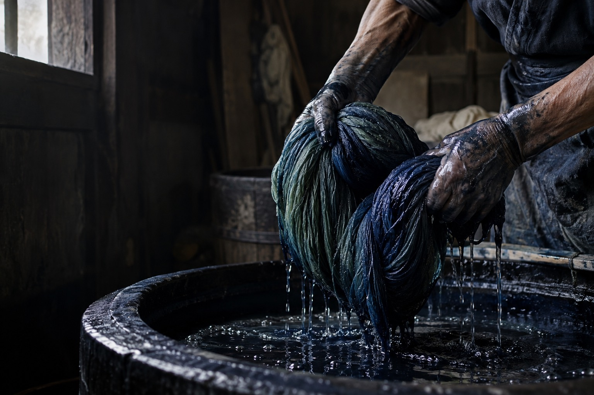
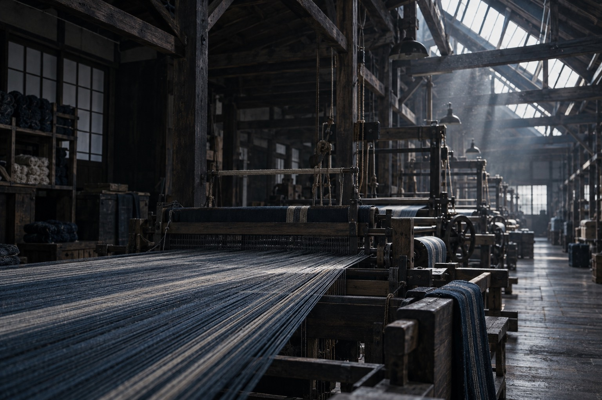
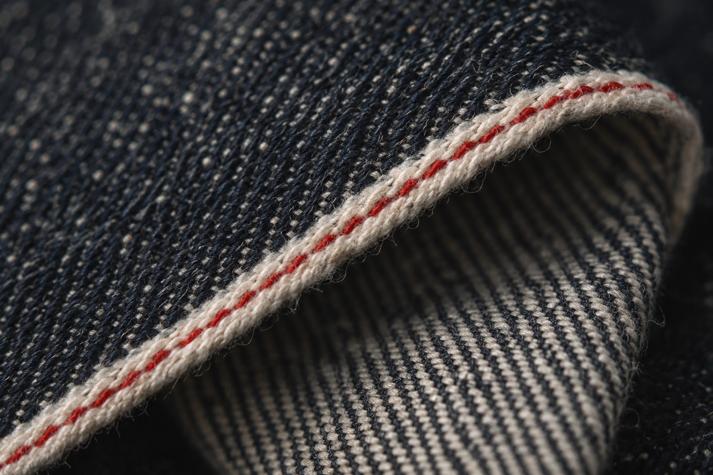
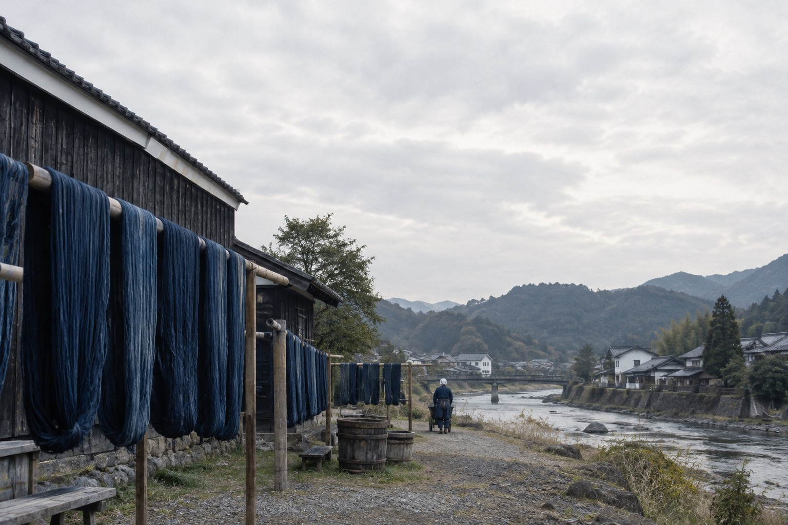

Ayaori Weaving Co., Ltd.
Integrated Report
対象期間 2025年4月1日 — 2026年3月31日
Woven
to be worn
longer. 2026
百年着られる布を、
今日も一反ずつ。

What we
keep.
keep.
速く織れる機械はある。
それでも、この四十二台を止めない。
Contents
- 01Message「直せる服」しか
つくらない理由04 - 02The Cloth一反ができるまで12
- 03Numbers数字で見る一年24
- 04Fold-out一着の一生30
- 05Data会社概要・財務データ38
Ayaori Integrated Report 202602

Selvedge / 赤耳旧式の力織機だけが残す布の端。
私たちの布は、ここで見分けられる。
03 — NumbersFY2025
売上より先に、
直した数を数えた一年。
修理の受付は前年の1.3倍に増えました。売上の伸びは4.8%にとどまりますが、
一着が着られる年数は9.4年まで延びています。長く着られることを、私たちは成長と呼びます。
修理受付件数
18,420件
前年比 +31.0%
平均着用年数
9.4年
業界平均 3.5年（当社調べ）
売上高
64.2億円
前年比 +4.8%
修理受付件数の推移単位：件 FY2019–FY2025
Ayaori Integrated Report 202624
04 — Fold-out
The life of
one jacket.
one jacket.
つくるのに50日。着られるのは9.4年。
その間に、平均2.1回、私たちの工房に戻ってくる。

03INDIGO
本社工房の干し場。ロープ染色の後、糸は川風で三日かけて乾かす。
つくる50日
着る・直す3,431日（平均9.4年）
1本の帯が、一着の時間の全部。赤い印は平均的な修理のタイミング（3.6年目・6.8年目）。
回収した生地の 3.2% をほどき、糸に戻して再び織る（2030年目標 20%）
01 Cotton
綿を選ぶ
100%
産地まで追える
オーガニック綿
02 Spin
紡ぐ
6日
撚りを甘くし、
糸に空気を残す
03 Indigo
藍で染める
12回
浸けては空気に
さらすロープ染色
04 Weave
織る
50m/日
シャトル織機1台が
1日に織る長さ
05 Sew
縫う
9日
縫い代を広くとり、
直せる余白を残す
06 Wear & Mend
着る・直す
2.1回
一着あたりの
平均修理回数
07 Reweave
織り直す
3.2%
回収した生地の
再織率
Ayaori Integrated Report 202630 — 31